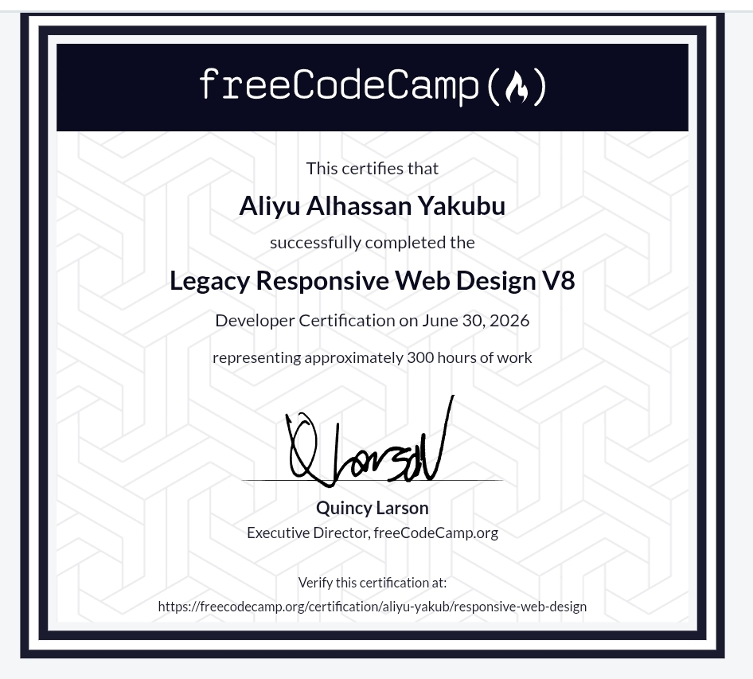

Welcome // Software Engineer Portfolio
Aliyu Alhassan Yakubu
Designing resilient backend workflows and high-fidelity, accessible web layers.
Professional Identity
I am Aliyu, a focused software developer who believes in creating structured, logical, and highly organized digital environments. My approach centers on precision—ensuring that every technical implementation functions seamlessly and scales predictably over time.
Currently progressing through my 200 Level in Software Engineering at Northwest University, Kano (YUMSUK), I spend my academic and personal development cycles diving deep into system performance optimizations, data integrity, and clean design systems.
Academic Timeline
Northwest University, Kano
Level 200 Undergraduate
Mastering object-oriented design, algorithmic computation, physical data models, and core system communication frameworks.
Skill Matrix
An honest calculation of my technical confidence levels across major development layers, prioritizing functional capabilities over graphical web icons.
Production Repositories
Unified Personal Production Portfolio
Vanilla Web Stack / HTML5 DOM Core / Custom CSS Grid Architectures
My primary live engineering release. This system was handcrafted completely from scratch without external layout engines, establishing custom asynchronous view controllers, responsive cross-device layout boundaries, and clean editorial typographic structures.
Verified Qualifications

Responsive Web Design
Issued by freeCodeCamp Global Curriculum
Validation of core competencies including declarative layout principles, accessible web patterns, dynamic layout scaling frameworks, and fluid multi-device system constraints.
Verify Registry OnlineTooling Ecosystem
GitHub
Vercel
Netlify
Render
Engineering Outlook
"True technical elegance lies in writing code that requires no explanation. Clean data architecture and semantic consistency will always outperform complex design patterns."
I center my workflows on predictability and extreme attention to detail. Every script module, style rule, and markup node must carry a specific structural burden, moving past heavy layer logic to keep things clean, simple, and fast.
Strategic Growth Tracking
Isolate and deploy optimized asynchronous backend applications using secure, micro-engineered Node.js design systems.
Deep-dive into structural and non-relational query environments to manage secure database transaction flows seamlessly.
Contribute to production toolchains that focus on web access standards and speed optimizations for users globally.
Media & Showcases
A collection of audio, video, and streaming integrations built for the modern web environment.
Secure a Collaboration
Available for web applications construction, backend logic building, or strategic engineering partnerships.